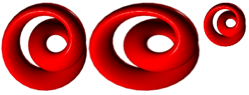
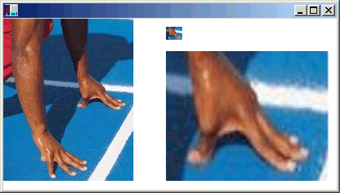

Обрезка и масштабирование изображений в GDI+
Можно использовать DrawImage метод Graphics позволяет рисовать и размещать векторные и растровые изображения. DrawImage — Это перегруженный метод, поэтому существует несколько способов передачи аргументов.
DrawImage вариантов
Один из вариантов DrawImage метод получает Bitmap и Rectangle. Прямоугольник определяет место назначения для операции рисования; то есть он задает прямоугольник, в котором должно быть нарисовано изображение. Если размер целевого прямоугольника отличаются от размера исходного изображения, изображение масштабируется по размерам прямоугольника назначения. В следующем примере кода показано, как должно быть нарисовано изображение же три раза: один раз без масштабирования, один раз с помощью расширения и один раз с сжатия:
Bitmap myBitmap = new Bitmap("Spiral.png");
Rectangle expansionRectangle = new Rectangle(135, 10,
myBitmap.Width, myBitmap.Height);
Rectangle compressionRectangle = new Rectangle(300, 10,
myBitmap.Width / 2, myBitmap.Height / 2);
myGraphics.DrawImage(myBitmap, 10, 10);
myGraphics.DrawImage(myBitmap, expansionRectangle);
myGraphics.DrawImage(myBitmap, compressionRectangle);
Ниже показаны три изображения.

Некоторые варианты DrawImage метод иметь исходный прямоугольник, а также параметр целевого прямоугольника. Исходный прямоугольник задает часть исходного изображения для рисования. Прямоугольник назначения задает прямоугольник, в котором для рисования эту часть изображения. Если размер целевого прямоугольника отличаются от размера исходного прямоугольника, изображение масштабируется по размерам прямоугольника назначения.
В следующем примере кода показано создание Bitmap из файла Runner.jpg. Все изображение рисуется без масштабирования на (0, 0). Затем небольшую часть изображения отображается дважды: один раз со сжатием и один раз с помощью расширения.
Bitmap myBitmap = new Bitmap("Runner.jpg");
// One hand of the runner
Rectangle sourceRectangle = new Rectangle(80, 70, 80, 45);
// Compressed hand
Rectangle destRectangle1 = new Rectangle(200, 10, 20, 16);
// Expanded hand
Rectangle destRectangle2 = new Rectangle(200, 40, 200, 160);
// Draw the original image at (0, 0).
myGraphics.DrawImage(myBitmap, 0, 0);
// Draw the compressed hand.
myGraphics.DrawImage(
myBitmap, destRectangle1, sourceRectangle, GraphicsUnit.Pixel);
// Draw the expanded hand.
myGraphics.DrawImage(
myBitmap, destRectangle2, sourceRectangle, GraphicsUnit.Pixel);
Ниже показан немасштабированного рисунка и части, сжатые и Развернутое изображение.
